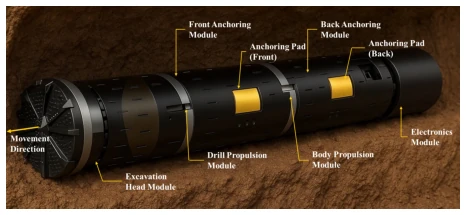
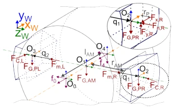
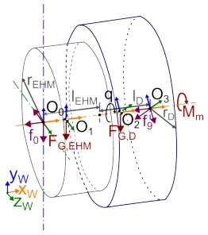
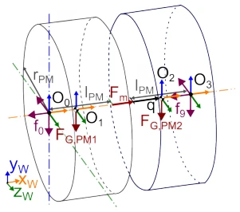
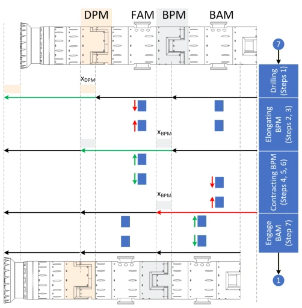
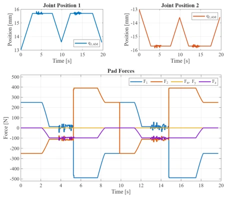
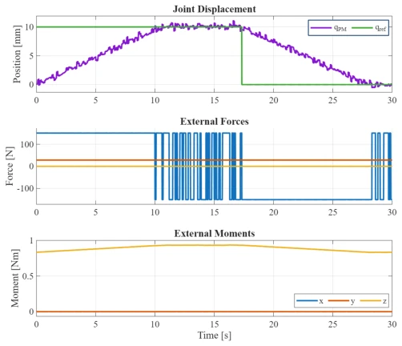
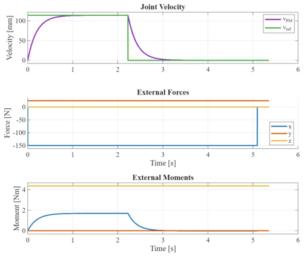
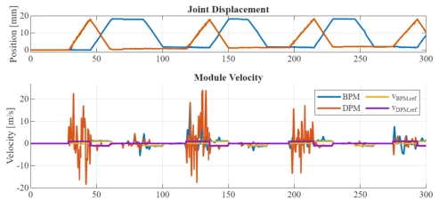

This paper presents a 'Frankenstein' design for the underground robot, forcibly combining earthworm peristalsis and shield tunneling drilling. Modular decoupling indeed makes dynamics modeling (Euler-Lagrange) controllable, avoiding complex coupling calculations, but do not assume running in Unity means real-world deployment. A 30mm advancement completed within 3 cycles sounds acceptable, but slippage issues expose the weakness of anchoring force. Although the control strategy uses PID plus a state machine, safety thresholds instead limit the travel distance, having a bit of a 'sacrificing performance for safety' flavor. Overall, the theoretical framework is complete and mathematical derivation is rigorous, but physical interaction robustness still needs practice in real soil; otherwise, it is merely a 'strongman' in the simulation world.
Underground environments lack space and perception is limited, requiring robots to possess both digging and mobility capabilities. Existing research mostly optimizes single levels, such as drill mechanics [3] or gait control [12], lacking a unified framework. The BADGER robot [12] only verifies linear propulsion, snake robots [1] rely on pipe diameter differences, and earthworm robots [6] focus on pipe crawling. This paper aims to solve the collaborative design of the drill head, anchoring subsystem, and motion planning under granular mechanics, filling the gap in modular collaborative control, avoiding assumptions that other layers are fixed while ignoring coupling effects, and attempting to achieve more efficient underground exploration under quantified granular mechanics.

Fig. 1. Concept of the bore propagator (CAD model of the robot in a soil type sub-surface)
Overall adopts a 'Modular Modeling - Independent Control - Centralized Gait - Simulation Verification' Pipeline. Innovations: 1. Structure decoupled into 5 modules (EHM, DPM, FAM, BPM, BAM), deriving dynamics using Euler-Lagrange equations respectively, simplifying calculations, and allowing different configurations. 2. Design a centralized state machine to generate gait signals, coordinating anchoring and propulsion actions, ensuring at least one anchoring module always works. 3. Controller designed based on MATLAB/Simulink, migrated to Unity physics engine via ROS interface, utilizing CAD geometry to achieve sim-to-real verification. Each module is coupled through coordinate transformation and torque transfer, ensuring overall motion consistency, and introducing PID control to handle disturbances.

Fig. 3. Coordinate systems and forces used to describe the AM

Fig. 5. Coordinate system and forces describing the EHM

Fig. 4. Coordinate systems and forces used for describing the PM

Fig. 6. Gait cycle of the robot showing elongation in x direction, where xDP M = xBP M. The phases are color-coded: green represents elongation, and red represents contraction.
Based on Unity physics simulation, running for 300 seconds, completing 3 full gait cycles. Evaluation metrics include advancement distance, anchoring normal force, and joint displacement. Results show the robot successfully advanced 30mm, verifying controller stability under drilling disturbances. Findings: Significant slippage exists during BPM contraction, possibly due to 250N anchoring force being insufficient to counter lever load. Safety threshold prevented over-travel, but also limited the theoretical maximum advancement amount. Proved control strategy effective, but physical interaction model needs further optimization to reduce slippage; future plan to extend to 3D motion and trajectory tracking.

Fig. 7. Joint positions and Forces acting on the AM

Fig. 8. Simulation of the dynamic model of the PM

Fig. 9. Simulation of the dynamic model of the EHM

Fig. 13. Joint displacement and module velocity of the PMs